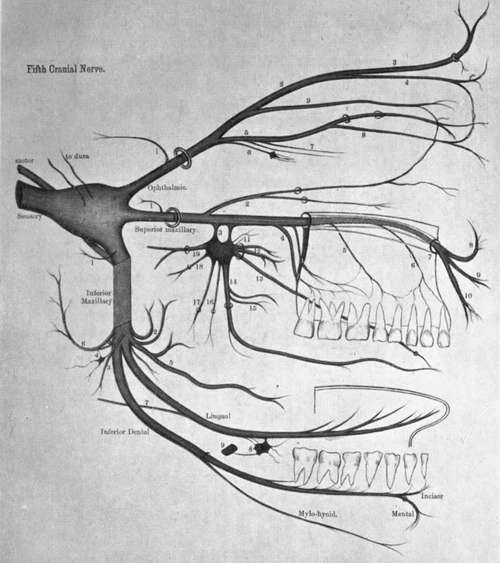

Inferior Maxillary Division
Description
This section is from the book "Nerves Of The Human Body", by Charles R. Whittaker. Also available from Amazon: Hughes Nerves Of The Human Body.
Inferior Maxillary Division
This consists of a sensory portion derived from the Gasserian (semilunar) ganglion together with the motor root of the trigeminal. The two portions pass separately through the foramen ovale, and join immediately afterwards to form a common trunk which lies in the pterygo-maxillary region, beneath the external pterygoid. After supplying a recurrent branch to the dura mater, which enters the cranium through the foramen spinosum, the trunk furnishes a twig to the internal pterygoid, and divides into a small or anterior, and a large or posterior division.
The Anterior Division is chiefly motor in function, and supplies:-
(a) Deep temporal branches, two in number, to the temporal muscle.
(b) Masseteric passes through the sigmoid (mandibular) notch of the lower jaw to the masseter.
(c) Pterygoid to the external pterygoid.
(d) Long buccal (a sensory branch) goes between the two heads of the external pterygoid, pierces the buccinator, and supplies the skin and mucous membrane of the cheek. It communicates with the corresponding branches of the facial.
The Posterior Division of the inferior maxillary gives off the auriculo-temporal, inferior dental (alveolar) and lingual branches. The AURICULO-TEMPORAL nerve arises by two rootlets which embrace the middle meningeal artery; it then passes backwards on the medial side of the neck of the mandible, between the latter and the internal lateral (spheno-mandibular) ligament, to reach the parotid gland. From the gland the auriculo-temporal crosses the zygomatic arch, posterior to the superficial temporal artery, and terminates in branches which innervate the skin of the temporal region, and effect communications with the temporal branches of the facial. The branches of the auriculo-temporal are :-
(a) Articular to the temporo-maxillary joint.
(b) Glandular to the parotid gland.
(c) Auditory to the external auditory meatus and tympanic membrane.
Plate II
Key To Plate II
Ophthalmic Division
1. Recurrent. 2. Frontal. 3. Supraorbital. 4. Supratrochlear. 5. Nasal. 6. To ciliary ganglion. 7. Long ciliary. 8. Infra-trochlear. 9. Lacrimal.
Superior Maxillary Division
1. Recurrent. 2. Orbital. 3. Spheno-palatine. 4. Posterior dental. 5. Middle dental. 6. Anterior dental. 7. Infraorbital. 8. Palpebral. 9. Nasal. 10. Labial. 11, Orbital. 12. Superior nasal. 13 Naso-palatine. 14. Anterior palatine. 15. Inferior nasal. 16. Posterior palatine. 17. Lateral Palatine. 18. Pharyngeal. 19. Vidian.
Inferior Maxillary
1. Recurrent. 2. Deep temporal. 3. To internal pterygoid. 4. Otic ganglion. 5. Long buccal. 6. Auriculo-temporal. 7. Chorda tympani. 8. Submaxillary ganglion. 9. Facial artery.
(d) Cutaneous to the upper half of the lateral aspect of the pinna, and the skin of the temporal region.
(e) Communicating to the otic ganglion and facial nerve.
The Inferior Dental (Alveolar) nerve descends beneath the external pterygoid muscle to the interval between the internal lateral ligament and the ramus of the mandible. Here it enters the. inferior dental (alveolar) canal, along which it passes as far as the mental foramen, giving off twigs in its course to the teeth. While in the canal the inferior dental divides into mental and incisor branches.
The branches of the inferior dental are :-
(a) Mylo-hyoid given off from the main trunk previous to its entry into the canal. It occupies a groove on the medial surface of the bone, and in the sub-maxillary triangle of the neck, supplies the mylo-hyoid and anterior belly of the digastric muscles.
(b) Incisor is distributed to the incisor and canine teeth.
(c) Mental emerges from the mental foramen to supply the skin of the chin and lower lip, and the mucous membrane of the latter. It communicates with the supramandibular branch of the facial.
The Lingual nerve is smaller than the inferior dental, and as it descends upon the internal pterygoid, occupies an anterior plane to that nerve. After passing beneath the mucous membrane of the mouth in the interval between the mylo-hyoid and the hyoglossus, the lingual runs below Wharton's (sub-maxillary) duct to supply the anterior two-thirds of the tongue along its dorsum and sides. Near its origin the nerve is joined at an acute angle by the chorda tympani branch of the facial. The lingual nerve furnishes two twigs to the sub-maxillary ganglion, and communicates with the hypoglossal.
Continue to: